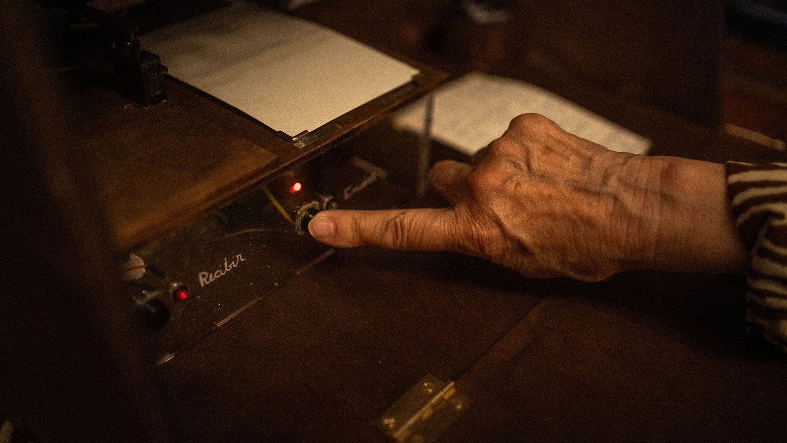

1. Marisa
Un puente “phygital” para conservar el cariño de mi abuela más allá de los límites del smartphone.



Aunque mi abuela y yo nos relacionamos con nuestros smartphones de formas muy distintas, a las dos nos generan ansiedad. Aun así, convivimos con ellos persiguiendo lo que estas tecnologías prometen: mantenernos conectadas con quienes queremos.
Sin embargo, esas ansiedades reflejan que el diseño de estos espacios digitales prioriza retenernos en la interacción antes que ayudarnos a cumplir nuestro objetivo. Desde el diseño de interacción nos preguntamos cómo crear un dispositivo que nos permita transmitir nuestro cariño lejos del smartphone, de sus problemas y de los intereses de terceros. Para ello se ha utilizado la autoetnografía, con el fin de entender la relación entre las personas y sus smartphones, el vínculo que se crea y cómo se traslada al entorno digital.
Presentamos un par de escritorios que permiten enviarse cartas al instante: una webcam las captura y un brazo robótico las escribe, pero solo si se ha dejado el smartphone en un cajón exterior. El dispositivo es una fusión entre lo analógico y lo digital en la que somos plenamente conscientes de la interacción que llevamos a cabo, somos sus únicos beneficiarios y recuperamos el control sobre nuestra relación.


El resultado del proyecto es un par de muebles, pero ha ido mucho más allá: solo fue posible gracias a una amplia investigación hecha mano a mano con mi abuela. Juntas exploramos cómo las distintas tecnologías han marcado nuestras vidas y cómo los smartphones están afectando hoy a nuestras relaciones. Por eso creo que todo el proceso de investigación es tan importante como el “producto” final. Estoy trabajando para publicar la investigación completa; mientras tanto, puedes ver el vídeo de abajo, con las reflexiones de mi abuela y fragmentos de la investigación. Si te interesa saber cómo funciona la electrónica de los escritorios, cómo construirlos o cómo reinterpretarlos, puedes consultar el repositorio que creé durante la construcción aquí.

Este proyecto recibió un premio ei! al mejor proyecto en la categoría de diseño interactivo.
Trabajo de fin de grado
Grado en Diseño de Interacción de ELISAVA, 2024
Proyecto de Marta Pou de Avilés.
Grado en Diseño de Interacción de ELISAVA, 2024
Proyecto de Marta Pou de Avilés.